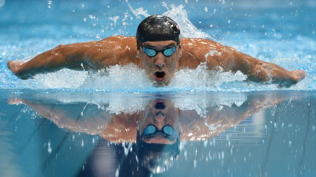
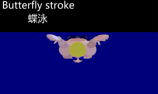

En la posesión inicial el nadador debe flotar con los pies detrás de él y los brazos extendidos frente a el.

|  | El estilo mariposa es un estilo de natación, una variación del estilo pecho o estilo braza en la que ambos brazos se llevan juntos al frente por encima del agua y luego hacia atrás al mismo tiempo. El movimiento de los brazos es continuo y siempre va acompañado de un movimiento ondulante de las caderas, el cual nace al llevar para abajo la cabeza al momento de entrar al agua, y culmina con la patada, llamada delfín, es un movimiento descendente y brusco de los pies juntos. En la posesión inicial el nadador debe flotar con los pies detrás de él y los brazos extendidos frente a el. |
| La técnica de la mariposa consiste en el movimiento síncrono del brazo con un síncrono de las piernas. El movimiento de ola del cuerpo es también muy significativo, como es la clave a la recuperación síncrona fácil y a la respiración sobre el agua. |  |
| Prueba | Récord | Récordwoman | País | Fecha | Lugar |
|---|---|---|---|---|---|
| 50 metros | 24,43 | Sarah Sjöström | Suecia | 5 de julio de 2014 | Borås, Suecia |
| 100 metros | 55,48 | Sarah Sjöström | Suecia | 7 de agosto de 2016 | Río de Janeiro, Brasil |
| 200 metros | 2:01.81 | Liu Zige | China | 20 de octubre de 2009 | Roma, Italia |
| Prueba | Récord | Récordman | País | Fecha | Lugar |
|---|---|---|---|---|---|
| 50 metros | 22,43 | Rafa Muñoz | España | 5 de abril de 2009 | Málaga, España |
| 100 metros | 49,82 | Michael Phelps | Estados Unidos | 1 de agosto de 2009 | Roma, Italia |
| 200 metros | 1'51,51 | Michael Phelps | Estados Unidos | 29 de julio de 2009 | Roma, Italia |
| Si desea volver a la página principal haz clic aquí |